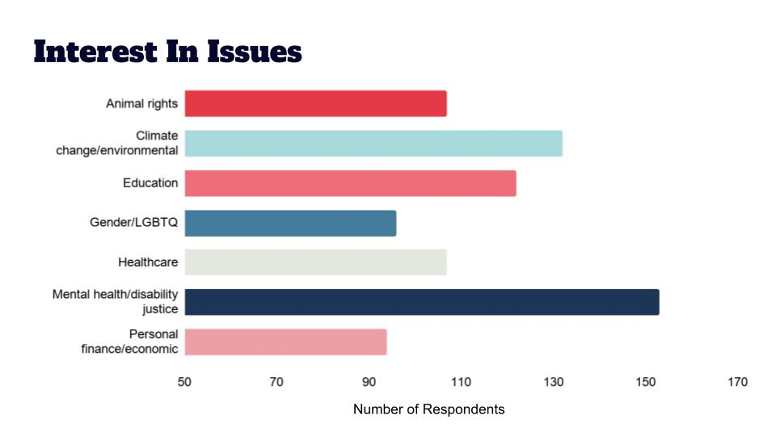

A few months ago, we sent out a survey to learn more about how to best focus our efforts to educate and organize within the community.
Here's what we found.
- The majority of our community is interested in having more conversations about racial, caste-based, and religious issues facing society, regardless of what age group they fall into.
- Caste-based issues have lower visibility in our community than racial and religious issues. We can provide education on this topic by focusing on how caste-based issues intersect with other issues that our community is more familiar with.
- Our community has a broad range of interests and concerns. Two topics of particular interest are animal and environmental justice and mental health and disability rights.
Learn More
Check out the raw data and our complete analysis of survey results by clicking on the links below.